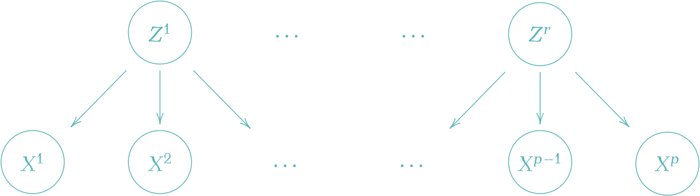
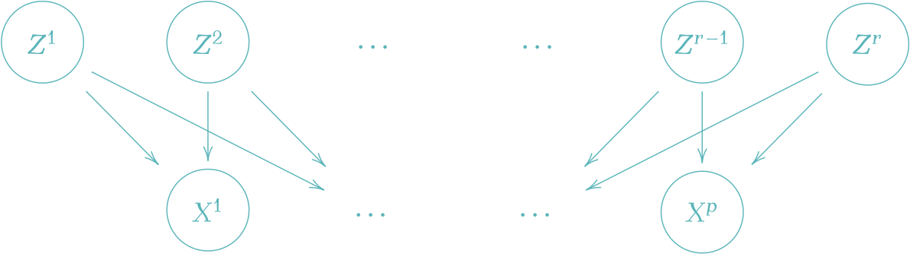
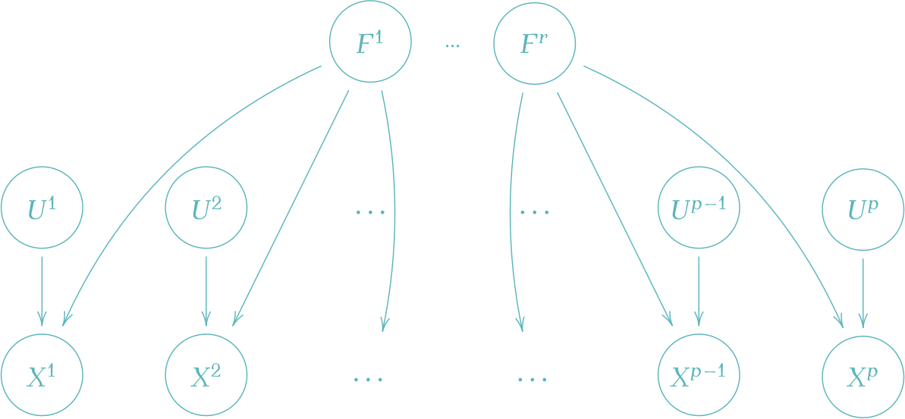
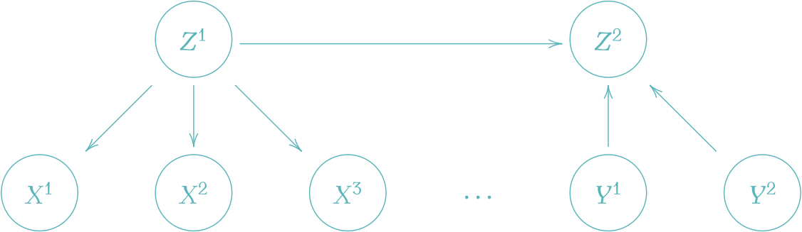
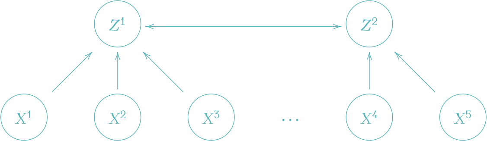
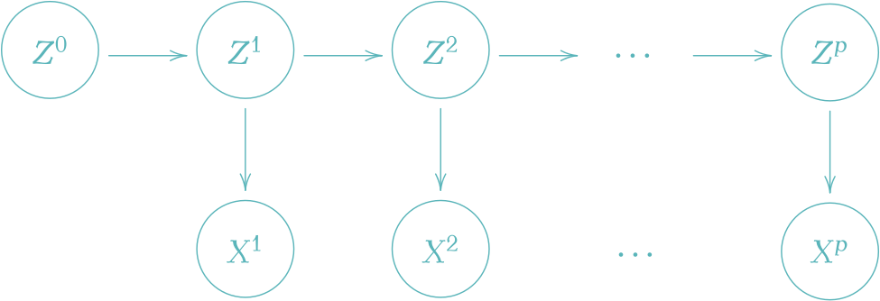
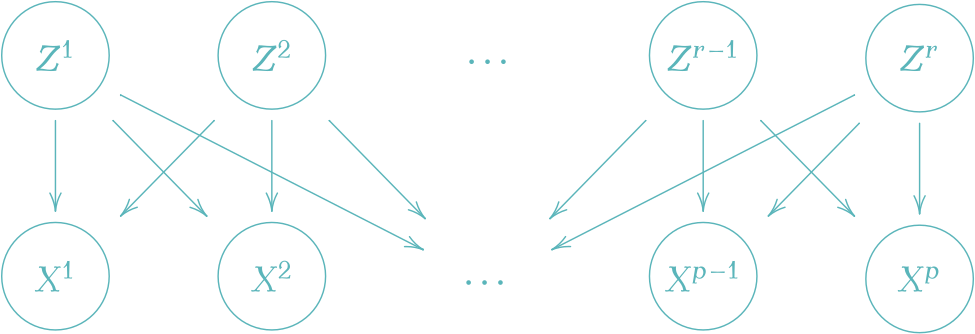

表現学習と非線型独立成分分析
「データ理解」に向けた深層潜在変数モデル
2024-07-29
A Blog Entry on Bayesian Computation by an Applied Mathematician
$$
$$
潜在変数模型とはどうやらとんでもなく広い射程を持った対象であるようである．
このように種々の文脈で登場する潜在変数模型であるが，それぞれの文脈において「潜在変数」の果たす役割は全く違う．
しかし，数学的には全く同じ枠組みで記述できる．従って，そのように扱うことは一定の価値を持つだろう．
実際，近年になり，これから本稿で解説するように，潜在変数モデルの観点から心理学，経済学，環境科学，遺伝学，信号処理，逆問題，社会学，政治科学，マーケティング分野で独自に発展した手法が，特定の手法の特別な場合と見れるという理解が進み，手法の交流と知見の交換が進んでいる．
本稿では主成分分析，因子分析，構造方程式モデリング，混合モデル，独立成分分析を，潜在変数モデルとして解釈し，図式で理解する．
確率変数を丸つきの大文字で表し，\(X^i,Y^i\) は観測変数，\(Z^i\) は潜在変数を表す．矢印は 確率核 を表す．

種々の 多変量解析法 を（ベイズ）階層モデルとして統一的に理解すると同時に，それぞれの文脈での「使い方の違い」に注目することを目指す．
主成分分析では，\(p\) 次元のデータ \(\{x_i\}_{i=1}^n\subset\mathbb{R}^p\) の各成分を，より少数の潜在変数を持った１層の線型 Gauss 模型

で説明しようとする．1
歴史的に主成分分析は，おろした垂線の足の二乗距離和の意味でコストが最小になるような線型射影を求める問題 (Pearson, 1901) として最初に登場し，値の分散が最大となるような線型射影を求める問題 (Hotelling, 1933) として PCA の名前がつき，心理学分野，特に psychometrika で取り上げられて大きく発展した．
このような潜在変数モデルとしての見方は probabilistic PCA (Tipping and Bishop, 1999) / SPCA (Sensible PCA) (Roweis, 1997) として，因子分析から逆輸入する形で初めて自覚された見方である（第 2.3.1 節も参照）．
確率的な見地から見れば，正規性を仮定した変数 \(Z^1,\cdots,Z^r\) の事前分布が互いに独立なデルタ分布に縮退している場合が古典的な PCA である (Roweis, 1997)．
いずれの場合も追加の過程なくしてモデルは識別可能性がなく，後続タスクに応じて種々の制約を追加することで所望の解を得る，という動的な使い方がなされる．
以降，\(X\in\mathcal{L}(\Omega;\mathbb{R}^p),Z\in\mathcal{L}(\Omega;\mathbb{R}^r)\) を確率変数， \[ \boldsymbol{X}=(x_i^j)\in M_{n,p}(\mathbb{R}),\boldsymbol{Z}=(z_i^j)\in M_{n,r}(\mathbb{R}) \] を行列することに注意．
PCA ではデータ行列を \[ \boldsymbol{X}:=\begin{pmatrix}x_1^\top\\\vdots\\x_n^\top\end{pmatrix}\in M_{n,p}(\mathbb{R}) \] で定めたとき，データ次元 \(p\) より小さい数の成分 \(r\) で説明しようとする： \[ \boldsymbol{X}\approx\boldsymbol{Z}C^\top,\qquad\boldsymbol{Z}:=\begin{pmatrix}z_1^\top\\\vdots\\z_n^\top\end{pmatrix}\in M_{n,r}(\mathbb{R}),C\in M_{p,r}(\mathbb{R}). \]
この問題は \(\boldsymbol{X}\) の 特異値分解 (SVD) \(\boldsymbol{X}=U\Sigma V^\top\) により解ける： \[ \boldsymbol{Z}=U\Sigma_{1:r}^\alpha A=\boldsymbol{X}(\underbrace{V\Sigma^{\alpha-1}_{1:r}A}_{=:W}),\qquad C:=V\Sigma_{1:r}^{1-\alpha}(A^{-1})^\top. \] ただし，\(\alpha\in\mathbb{R},A\in\mathrm{GL}_p(\mathbb{R})\) は任意である．この解は，特異値分解の性質により，残差を Hilbert-Schmidt ノルムの意味で最小にする： \[ \min_C\|\boldsymbol{X}-\boldsymbol{Z}C^\top\|_\mathrm{HS}=\min_C\frac{1}{n}\sum_{i=1}^n\lvert x_i-Cz_i\rvert^2=\sigma_{r+1} \tag{1}\] この目的関数は復元誤差とも理解できる．ただし，\(\sigma_{r+1}\) は行列 \(\boldsymbol{Z}C\) の第 \(r+1\) 特異値である．
荷重行列 \(W\) が \(W^\top W=I_r\) を満たすという制約条件を追加すると，目的関数 (1) は潜在変数の分散を最大にすることと等価になる： \[ \operatorname*{argmin}_{W}\|\boldsymbol{X}-\boldsymbol{Z}W\|_\mathrm{HS}=\operatorname*{argmin}_W\operatorname{Tr}((\boldsymbol{X}W)^\top\boldsymbol{X}W). \tag{2}\]
すなわち，\(\boldsymbol{Z}=\boldsymbol{X}W\) の変動が差大になるようにすれば良い．
そのためには，確率変数 \(X\) のデータ行列 \(\boldsymbol{X}\) から計算した経験共分散行列 \(S\in M_{p}(\mathbb{R})_+\) の固有ベクトルのうち，対応する固有値が大きいものから \(w_1,\cdots,w_r\) として荷重行列とすれば良い： \[ W:=(w_1\;\cdots\;w_r). \]
実はこれは解の１つに過ぎず，\(W\) に右から直交行列を乗じて「回転」させたものは全て解になる．上の解は追加の条件 \(Z^\top Z=I_r\) を課すことで特定される．
各次元に関する長さのスケールを揃えるために，PCA を始める前にデータを正規化しておくか，または共分散行列 \(S\) の代わりに，相関行列を用いるべきである．
また，実際に最適化や相関行列の固有値分解をすることはなく，基本的に SVD の方が \(O(np^2)+O(p^3)\) と高速である (Unkel and Trendafilov, 2010)．
さらに次元 \(p\) が高い場合は，確率的 SVD (Halko et al., 2011), (Drineas and Mahoney, 2016) を用いてさらに \(O(nr^2)+(r^3)\) まで削減できる．このような手法は確率的数値解析と呼ばれる (Murray et al., 2023)．
\(W^\top W=I_r\) の仮定の下で，PCA の目的関数 (1) は，潜在変数の分散最大化 (2) と見れるのだった．
これは同じ仮定の下で，データ変数 \(X\) の最小誤差の線型射影を求める問題とも見れる： \[ \operatorname*{argmin}_W\|\boldsymbol{X}-\boldsymbol{Z}W\|_\mathrm{HS}=\operatorname*{argmin}_W\|\boldsymbol{X}-\boldsymbol{X}WW^\top\|_\mathrm{HS}. \]
なお，一般の行列 \(A\) について \(P_A=A(A^{-1}A)^+A^\top\) は \(\mathrm{Im}\,A\) 上の直交射影になる．\(A\) が直交行列であるとき，\(P_A=AA^\top\) が成り立つ．
因子分析では，\(Z^1,\cdots,Z^r\) を対等な因子と見て，それぞれのデータへの影響を調べたい．このような場合は， \[ \frac{1}{n}\boldsymbol{Z}^\top\boldsymbol{Z}=I_r \] が自然な制約になる．この際の解は，直交行列 \(T\in O_r(\mathbb{R})\) の違いを除いて， \[ \boldsymbol{Z}=\sqrt{n}UT,\qquad C=\frac{1}{\sqrt{n}}V\Sigma_{1:r}T,\qquad W=\sqrt{n}V\Sigma_{1:r}^{-1}T, \] まで確定する．
しばしば，追加の仮定 \[ C^\top C=\mathrm{diag}(\rho_{1:r}),\qquad \rho_1\ge\cdots\ge\rho_r\ge0 \] を課して得られる一意な解 \[ \boldsymbol{Z}=\sqrt{n}U,\qquad C=\frac{1}{\sqrt{n}}V\Sigma_{1:r},\qquad W=\sqrt{n}V\Sigma_{1:r}^{-1}, \] を 初期解 と呼び，これを「回転」させることで他の解が探索され，所望の分解を探す．
因子分析では (Thurstone, 1947) 以来，種々の回転法とアルゴリズムが蓄積している (足立浩平 and 山本倫生, 2024)．一般にこの文脈では，(Thurstone, 1947) にいう「単純構造」を達成した，解釈が容易な因子をドメイン知識に基づいて構成することを目指す．この「単純構造」とは，現代でいう一種の disentangled factor と理解できる．
主成分分析が「低階数近似」ならば，因子分析は「高階数近似」というべきである (足立浩平, 2023)．

より正確には，因子分析は，観測の各次元 \(X^1,\cdots,X^p\) ごとに「独自因子」\(Z^1,\cdots,Z^p\) を想定しつつ，全観測に共通する「共通因子」\(F^1,\cdots,F^r\) をどのように抽出できるかを考える，という志向性を持つ：

この意味では，FA は独自因子 \(U^1,\cdots,U^p\) を追加した PCA とも理解できる．
歴史的には (Spearman, 1904) が古典テスト理論の文脈で \(r=1\) の因子分析を，(Thurstone, 1947) が一般の \(1\le r<p\) の場合の因子分析を「回転」の手法と共に導入した．
さらに興味深いことに，FA では PCA をはじめとした多くの多変量分析手法と違い，(Lawley, 1942), (Anderson and Rubin, 1956) らにより，初期から確率的な扱いが発展した手法である (足立浩平 and 山本倫生, 2024)．
FA に倣う形で，PCA にも確率論的なアプローチが導入された (Tipping and Bishop, 1999), (Roweis, 1997)．
FA では \(\boldsymbol{Z}=(\boldsymbol{F}\;\boldsymbol{U})\in M_{n,r+p}(\mathbb{R})\) の分解に基づき， \[ \boldsymbol{X}\approx\boldsymbol{F}A^\top+\boldsymbol{U}\Psi^{1/2},\qquad A\in M_{r,p}(\mathbb{R}),\Psi=\mathrm{diag}(\psi_1,\cdots,\psi_p)\in M_p(\mathbb{R}), \] によってデータ行列 \(\boldsymbol{X}\in M_{n,p}(\mathbb{R})\) を説明しようとする．2
PCA よりさらに識別可能性は絶望的であるが，FA では潜在変数の解釈可能性担保のため，次の仮定を課す： \[ \boldsymbol{1}_n^\top\boldsymbol{F}=\boldsymbol{0}_r,\qquad \boldsymbol{1}_n^\top\boldsymbol{U}=\boldsymbol{0}_p, \] \[ \boldsymbol{F}^\top\boldsymbol{F}=n\boldsymbol{I}_r,\qquad \boldsymbol{U}^\top\boldsymbol{U}=n\boldsymbol{I}_p,\qquad\boldsymbol{F}^\top\boldsymbol{U}=O. \] すなわち，推定される確率変数 \(F,U\) が標準化されていて互いに無相関であるように誘導する．
また，\(\boldsymbol{U}\) の経験分散が \(\Psi\) になることに注意．
この問題は，\(C:=(A\;\Psi^{1/2})\) と定めると，PCA と同じ問題 (1) に帰着される： \[ \min_C\|\boldsymbol{X}-\boldsymbol{Z}C^\top\|_\mathrm{HS}. \]
これはやはり特異値分解により解くことができる (De Leeuw, 2004)．
解は直交行列による回転を除いても，やはり一意に定まらないようである．
ここで， \[ U:=\begin{pmatrix}U^1\\\vdots\\U^p\end{pmatrix}\in\mathcal{L}(\Omega;\mathbb{R}^p),\qquad F:=\begin{pmatrix}F^1\\\vdots\\F^r\end{pmatrix}\in\mathcal{L}(\Omega;\mathbb{R}^r), \] を確率変数とすると， \[ X\approx AF+\Psi^{1/2}U \tag{3}\] によって \(X\) に確率モデルが誘導されることになる．
\(U,F\) に正規性の仮定をおけば，このモデルは EM アルゴリズムなどを用いて最尤推定できる (Rubin and Thayer, 1982), (Ghahramani and Hinton, 1996)．このような最尤推定のアプローチは (Lawley, 1942) から考えられていた．
この見方が PCA にも応用された．追加の仮定 \[ A^\top A=I_{r},\qquad \Psi=\sigma^2I_p, \] の下での FA への確率論的アプローチを probabilistic PCA (Tipping and Bishop, 1999) / SPCA (Sensible PCA) (Roweis, 1997) という．
\(\sigma\to0\) の極限で古典的 PCA が回復される．
一方で，分布の仮定は課さず，\(X\) の経験分散 \(S\) を，式 (3) の右辺の共分散 \[ \Sigma:=AA^\top+\Psi \] となるべく近づけるように学習する方法もある．
例えば (Harman and Jones, 1966), (Harman and Fukuda, 1966) では，Hilbert-Schmidt ノルム \(\|S-\Sigma\|_\mathrm{HS}\) の最小化することで解を探索する方法が考慮された．
このように，データの共分散行列を低階数近似するアプローチは 共分散構造分析 (Bock and Bargmann, 1966) ともいう．
さらに，確率論的なアプローチは一般の構造方程式モデル (SEM, 次節 3 参照) へと発展 (Karl Gustav Jöreskog, 1970), (Sörbom, 1974), (Karl G. Jöreskog, 1978) し，現状，共分散構造分析は SEM の特別な場合と解される．3
FA のモデルは識別可能とは程遠く，解釈可能性が重要である．(Thurstone, 1947) は因子付加行列が「単純構造」を持つことを一つの指標としたが，現代的にはスパース推定の言葉で与えられた 完全単純構造 (Bernaards and Jennrich, 2003) を仮定することが増えてきた．
スパース PCA (Zou et al., 2006), (Ian T Jolliffe and Uddin, 2003) では，従来の SVD + 回転ではなく，LASSO 様の \(L^1\)-正則化項によって，解釈可能な因子付加行列を得ようとする．最終的に得られる目的関数は elastic net (Zou and Hastie, 2005) 様になる．
等価だが，自動関連度決定 (ARD) を用いた Bayesian PCA (Bishop, 1998), (Archambeau and Bach, 2008) や spike-and-slab (Rattray et al., 2009) など，スパース性を促す事前分布を用いることもできる．
非正規な事前分布（特に Laplace 分布やロジスティック分布などの裾の重いもの）を用いることで，モデルが識別可能性を回復することがある．
このように，一般の設定で潜在変数モデルが識別可能になるための条件が，非線型独立分析の分野で提案されている (Khemakhem et al., 2020)．
また，Gamma 事前分布は非負かつスパースな表現を促進し，カウントデータとよく用いられる (Canny, 2004)．
これは環境科学分野の Positive Matrix Factorization (Paatero and Tapper, 1994) や信号処理分野の Nonnegative Matrix Factorization (NMF) (Lee and Seung, 1999) の，確率論的な一般化と見れる (Buntine and Jakulin, 2006)．
また，Dirichlet 事前分布を用いることで，潜在変数 \(Z\in\mathcal{L}(\Omega;\mathbb{R}^r)\) に \[ \sum_{i=1}^rZ^i=1 \] が課されるため，「各次元への依存度」のような意味づけが可能になる．これは政治学における空間分析において，「どの立場への傾倒が強いか」を推定することにも用いられる (Buntine and Jakulin, 2006)．
このモデルは multinomial PCA (Buntine and Jakulin, 2006) の他に，遺伝学で admixture (Pritchard et al., 2000)，simplex factor analysis (Bhattacharya and Dunson, 2012), 科学出版で mixed-membership model (Erosheva et al., 2004)，マーケティングで user rating profile model (Marlin, 2003) など，種々の分野で独立に提案されている．
FA の一般化の方向性として，正規性の緩和の他に，線型性の緩和があり得る．
MCMC による推論 (Hoffman, 2017) をすることも，または指数型分布 (Collins et al., 2001) への拡張や，VAE による非線型化を通じて変分推論をすることも考えられる．
自己符号化器 は，まさに非線型な潜在変数モデルに対する最尤推定を行っており，４層以上のニューラルネットワークを用いることで PCA を非線型化して一般化することができる．4
また，カーネル法と Gauss 過程により非線型化することもできる (Lawrence, 2005)．
複数の線型 Gauss 因子分析モデルの重ね合わせとみなす mixture of factor analysers (Ghahramani and Hinton, 1996) も単純ながら表現が高く，EM アルゴリズムや SGD (Richardson and Weiss, 2018), (Zong et al., 2018) によって推定できる．
(Richardson and Weiss, 2018) では生成モデルとしての性能も GAN と劣らないこと，VAE や GAN などの生成モデルよりも分布へのフィッティングが良いことを報告している．
さらにこのアプローチはノンパラメトリックベイズ法につながる．この方法では，例えば (Paisley and Carin, 2009) では Beta 過程事前分布をおき，Gibbs サンプラーで推論することで，混合数 \(K\) も同時に自動で決定できる．
(K. G. Jöreskog, 1969) は因子分析モデルを潜在変数モデルとして，事前情報を取り入れるなど柔軟に用いた．
特に，データを（現代でいう）訓練データと検証データに分けて，因子分析により推定された潜在変数間の関数関係を検定するための方法を提案し (K. G. Jöreskog and Lawley, 1968)，これを 検証的因子分析 (Confirmatory FA) と呼び，それ以前の手法に 探索的因子分析 というレトロニムを与えた．5
最終的に，潜在変数同士により一般的な関数関係も考慮したものなど多くの潜在変数モデルが，共分散構造に基づいた非線型数値最適化を推論エンジンとして統一的に推定できることに辿り着いた．6
このことに加えて，潜在変数間の関数関係に適切な仮定をおくことで，因果推論・高次の因子分析・分散分析など従来考慮されなかった新たなタスクにも適用可能であることも了解された (Karl G. Jöreskog, 1978), (Bentler, 1980)．7
現代では特徴抽出，生成，表現学習にも用いられていると思うと感慨である．
これを 共分散構造分析 または 構造方程式モデリング (SEM: Structural Equation Modeling) という．8 心理学の文脈では，潜在変数のことを 構成概念 (construct) と呼び，潜在変数間は無関係とした従来の因果分析モデルを 測定方程式 と呼ぶ．9
PLS (Partial Least Square) モデル (K. G. Jöreskog and Wold, 1982), (Gustafsson, 2001) では，次のような潜在変数モデルを用いて，２つの構成概念間の因果関係を評価しようとする (豊田秀樹, 1991)：

なお，パス図において，潜在変数から観測変数に矢印が伸びている場合，これは影響的指標と呼ばれ，観測のモデルと解され，誤差が入ることが想定される (豊田秀樹, 1991)．10 逆の矢印は形成的指標という．
すなわち，PLS では，\(X^1,X^2,X^3,\cdots\) には，\(Z^1,Z^2,\cdots\) とは独立な独自因子が作用していると仮定されている．
このような仮定は，\(Y^1,Y^2,\cdots\) を被説明変数として，教師あり PCA (Yu et al., 2006) に有用である．
というのも，被説明変数のうち必ずしも \(Y^1,Y^2,\cdots\) に関係する要素が全てとは限らないために，\(Z^1,Z^2\) の間で間接的に回帰分析を行いたい場合に自然な設定である (Nounou et al., 2002)．
PLS において，潜在変数から構成概念への矢印が全て影響的であった場合，これは潜在因子の間に関係が仮定されていることを除いて，（探索的）因子分析と等価になる．
一般に，SEM は，潜在変数同士の関数関係も考慮した因子分析モデルだと理解できる．
このようなモデルは，社会学において 多重指標分析 と呼ばれていたモデルに相当し (白倉幸男, 1984) (清水和秋, 1989)，経済学において 同時方程式モデル と呼ばれていたモデルに相当する (Bentler, 1980)．11
加えて，心理学・行動計量学においても，多くの既存の多変量解析法（因子分析，パス解析，二段階抽出モデル，潜在構造分析，項目反応モデルなど）はいずれも SEM の特殊な形だと解釈できることが自覚された (McArdle, 1984), (Muthén, 2002)．12
こうして SEM の名と LISREL プログラムの下で，多くの社会科学分野で使われていたモデルが，形式的にはほとんど等価であるという了解が形成されていった．
このことから，SEM は第二世代の多変量解析 (Fornell, 1985) とも評される．13
構造方程式モデリングが普及した理由の一つとして，計算機統計学の発展とうまく合流した点が見逃せない．
そもそも Jöreskog は，因子分析を研究していた時期 (Karl G. Jöreskog, 1966) (K. G. Jöreskog, 1967) から，数値的な解法とコンピュータプログラムの開発にも重点を置いていた．特に，因子分析モデルを，DFP 法 に基づいて数値的に最尤推定する方法を提案した (K. G. Jöreskog, 1967)．
SEM も，コンピュータプログラム LISREL (LInear Structural RELationships) (Jőreskog and Thiilo, 1972) の存在が，広い分野の人口に膾炙した要因として大きい (清水和秋, 1989), (Grimm and Yarnold, 2016)．
構造方程式モデルがどのように因子分析，因果分析，共分散構造分析を統合し，LISREL プログラムと共に発展していたかは，(清水和秋, 1994) に大変わかりやすくまとまっている
正準相関分析 (Hotelling, 1936) においては，２つの構成概念の間は相関関係で結び，すべての観測は形成的な影響を及ぼすとする（観測誤差は想定しない） (豊田秀樹, 1991)：

このモデルでは \(X^1,X^2,X^3\) とその潜在要因 \(Z^1\)，\(X^4,X^5\) とその潜在要因 \(Z^2\) とを完全に対等に扱い，その間の関係を理解しようとする．
例えばマルチモーダル学習において，\(X,Y\) が類似したタスクに関するデータという場合に応用がある (岩瀬智亮 and 中山英樹, 2016)．また，PLS と共に特徴抽出にも用いられる (Sun et al., 2009)．
複数の標本に対して同時に実行する主成分分析ともみなせるが，別々に PCA を実行した場合と違い「共通要因」を抽出することに志向がある (赤穂昭太郎, 2013)．
なお，正準相関分析が，このような確率論的解釈ができることは (Bach and Jordan, 2005) で自覚されたことである．
この潜在変数モデルとしての観点から，\(Z^3,Z^4,\cdots\) がある GCCA (Generalized CCA) (Horst, 1961)，指数分布族の場合 (Klami et al., 2010)，ニューラルネットワークにより非線型にした DCCA (Andrew et al., 2013)，さらに変分推論する場合 (Wang et al., 2017), (Suzuki et al., 2017) に拡張されている．
質的データをダミーベクトルに変換して（一般化）正準相関分析を行う，質的データの解析法を 対応分析 (correspondence analysis) または 数量化第III類 ともいう．14
混合モデルは，次のようなたいへん基本的な設定であるが，第 2.7 節で見たように，例えば因子分析モデルと組み合わせることで極めて豊かな表現力を持つ．
混合モデルは SEM の別の選択肢としても使える．また，ランダム効果要因を明示的にモデルに組み込む意味で，一般線型モデルの確率論的な拡張と考えることもできる (狩野裕, 2002)．15
\(Z\in\mathcal{L}(\Omega;[K])\) は \[ [K]=\{1,\cdots,K\} \] に値を取る離散確率変数で，確率核 \(Z\to X\) が \[ p(x|z=k)\,dx=\mathrm{N}_p(\mu_k,\Sigma_k) \] と表せる場合，\(X\) に課される仮定を 正規混合モデル (GMM: Gaussian Mixture Model) という．
\(Z\sim\mathrm{U}([K]),\Sigma_k=I\) の場合，これは \(K\)-平均クラスタリングに等価 なモデルとなる．
これは SGD により訓練をすることで，生成のタスクにおいても GAN に匹敵する性能も持つ (Richardson and Weiss, 2018)．
また，デノイジングや deblurring, inpainting, super-resolution などの画像逆問題は，巨大な GMM の潜在変数の推定として理解できる (Zoran and Weiss, 2011), (Papyan and Elad, 2016)．
Gaussian scale mixture モデルとは， \[ p(x|z)\,dx=\mathrm{N}_p(0,\sigma_0^2z) \] で定まる階層モデルである．
このモデルは，\(Z\) の分布により，種々の（特に裾の重い）分布を表せる：
文書の埋め込み・数値表現を得るために，単語 \(i\in[M]\) が文書 \(j\in[N]\) に現れた回数をカウントした行列 \(\boldsymbol{C}\in M_{MN}(\mathbb{N})\) を通じた主成分分析が用いることも考えられる．
これを 潜在意味索引 (LSI: Latent Semantic Indexing) (Deerwester et al., 1990) と呼ぶ．得られた低次元埋め込みを文書検索 (document retrieval) などに用いることもできる．
\(\boldsymbol{C}\) の列も単語とし，帯幅 \(h>0\) を決めて，\(h\) 文字以内に単語 \(i,j\in[M]\) が共起した回数を \(C_{ij}\) とすると，全く同様の手続きが，単語の埋め込みに応用できる．これを 潜在意味解析 (LSA: Latent Semantic Analysis) (Deerwester et al., 1990) と呼ぶ．
(Hofmann, 1999) による pLSI または aspect model は LSI を確率モデル，特に混合モデルとして解釈し直したものである．
単語数よりも少ない数の トピック \(Z\) というものがあり，これが単語を決めている，というモデルを想定した．
このモデルを通じて，トピック \(Z\) の分布（あるいは，現代的には \(\Theta\) の値）を「文書」の特徴量とする，というアイデアである．
変数 \(\Theta\) に Dirichlet 事前分布を追加し，完全なベイズの見方を提示したのが Latent Dirichlet Allocation (Blei et al., 2003) である．
\(\Theta\) を文書，\(Z\) トピック，\(W\) をトピックごとの語彙デッキとする．
最終的に，トピック \(Z\) とその人の語彙 \(W\) が合わさって，単語 \(X\) が観測されるというモデルが考えられている．
自然言語処理において，単語分布のモデリングの潜在変数は トピック と呼ばれて，これを確率的にモデリングする手法は PTM (Probabilistic Topic Model) (Blei, 2012) と呼ばれている．
「トピック」は短い文章の中でも激しく移り変わることが知られている (Church and Gale, 1991)．
そのため，LDA では，\(\Theta\) の事前分布と \(W\) の事前分布は， \[ \mathrm{Dirichlet}(\alpha\boldsymbol{1}),\qquad\alpha>0, \] という形で，極めて小さい \(\alpha>0\) を設定し，特定のトピックがどの文書に現れるかは極めてスパースになるようにモデリングをする．
LDA の推論手法には変分推論 (Blei et al., 2003) や Gibbs サンプリング (T. L. Griffiths and Steyvers, 2004)，そしてスペクトルに基づく方法 (Arora et al., 2013) がある．
トピック数の決定には，尤度を 焼なまし重点サンプリング で計算する方法 (Wallach et al., 2009) の他，ノンパラメトリックベイズ法も用いられる (Yee Whye Teh and Blei, 2006)．
単語の並びは明らかな方向性があり，対照的なモデリングはこの消息を取り逃がしていると考えられる．
そこで，トピックの移り変わりを捉えるモデルとして dynamic topic model (Blei and Lafferty, 2006) がある．これは Kalman 平滑化と変分推論を組み合わせている様である．
また単語の時系列構造を捉えるために，LDA に隠れ Markov モデルを組み合わせた LDA-HMM (T. Griffiths et al., 2004) が提案された．TopicRNN (Dieng et al., 2017) ではより長距離の相関を捉えるために，RNN と組み合わせている．
状態空間モデル (State Space Model) は，混合モデルの時系列化と捉えられる：

潜在変数 \(X_t\) が離散的である場合は特に 隠れ Markov モデル (HMM: Hidden Markov Model) (Baum and Petrie, 1966) と呼ばれる．
HMM に関しては早くから EM 様の推定手法 Baum-Welch アルゴリズム (Baum and Eagon, 1967), (Baum et al., 1970) が提案されているが，データサイズが大きい場合は SGD が用いられる．Blocked Gibbs サンプラー (Scott, 2002) や，潜在変数を消去して，周辺尤度に関してスペクトル法／テンソル分解 (Hsu et al., 2012), (Animashree Anandkumar et al., 2012), (Anima Anandkumar et al., 2015), (Obermeyer et al., 2019) を実行するなどの代替手法がある．
S4 (Structured State Space Sequence) (Gu et al., 2022), (Gu et al., 2020), (Goel et al., 2022) とは，時系列を深層ニューラルネットワークの力でモデリングするために，線型 Gauss で単純な SMM を上下にスタックし深層にしたものである．各層は LSSL (Linear State Space Layer) と呼ばれる．
さらに長距離の依存性に耐えるために，S5 (Smith et al., 2023) や Mamba (Gu and Dao, 2024) が提案されている．後者では，選択的に記憶を忘却できるような「選択」機構 (S6: Selective SSM) を導入している．
（線型）独立成分分析で用いるモデルは，PCA や FA のそれと全く変わらず，線型変換 \(x_n=Az_n\) でデータを説明しようとする：

ただし，潜在変数 \(Z^1,\cdots,Z^r\) は互いに 独立 であるという「真の構造」が強く想定される場合に使われる．
加えて，モデルの 識別可能性 を重視する．このために，（独立）因子分析（第 2.5 節）で考えたように，正規分布より裾の重い事前分布を導入することで，モデルの識別可能性を確約する．17
この意味で，確率モデルとしては PCA / FA に等価であるが，典型的な ICA の文脈では \(Z^1,\cdots,Z^r\) は非正規確率変数であり，\(A\) を生成荷重や混合行列，\(A^{-1}\) を 認識荷重 (recognition weight) などという．
最初に 音源分離 について適用された (Bell and Sejnowski, 1995) では，\(X\) と \(Z\) の相互情報量の最大化が目指された．
最尤推定は EM アルゴリズムの他に近似 Newton 法で実行されることもあり，fast ICA (Hyvärinen and Oja, 2000) と呼ばれる．
また古典的には，探索的データ解析で考案された 射影追跡 (PP: Projection Pursuit) (Friedman and Tukey, 1974) みたく，学習される \(Z\) の分布が Gauss からなるべく遠いように学習することも考えられた．
disentangled な表現を学習したい場面では，\(Z\) の成分同士の相関が最小になるように学習される； \[ \operatorname{KL}\left(\operatorname{P}^Z,\bigotimes_{j=1}^r\operatorname{P}^{Z_j}\right). \]
最小情報コピュラに基づく方法も提案されている (Bedford et al., 2016), (Sei and Yano, 2024)．
他にも表現学習や認知科学の文脈を踏襲して，InfoMax やスパース符号化などの原則がある．
現代の深層生成モデルは，いずれも非線型な潜在変数モデルであると理解できる．
その意味で，次の記事は全て，本稿の続きであり，本稿は現代の機械学習の壮大な序章としても理解できる．
非線形性の他に本稿で扱わなかったものは深層モデルである．
だがそもそも，現代のニューラルネットワークが深層化したのは，単純で可微分なモジュール性を保ちながら表現力を高めるためのトリックであり，確率論的には本稿で扱ったモデルと等価であるはずである．
ニューラルネットワークの他にも，計算のために深層化したモデルを考える場面は多い．例えばアニーリングを用いた SMC サンプラー は，グラフカルモデル \(Z\to X\) の潜在変数 \(Z\) の推定を，人工的に時系列構造を見出して状態空間モデル 4.5 にあてはめてサンプリングしやすくする方法と言える．
しかし，確率核は射をなすのだから，全てのモデルは本質的には一層であるとみなすこともできるのである．
この見方をとった方が計算効率が上がるという例もある．例えば (Chen et al., 2024) では，トランスフォーマーの注意機構をランダム Fourier 特徴写像で近似し，Monte Carlo 法によって元のモデルと等価な計算を安価に行っている．
ベイズ機械学習 や 位相的機械学習 をはじめとした，丁寧なモデルへの理解が，これからも手法への統一した視点からの理解と，応用分野を横断した相互理解を促進してくれるのではないかと，筆者は意気込んでいる．
ここでは，歴史を感じる引用をいくつか紹介したい．
心理測定学 (psychometrics) における因子分析，計量経済学 (econometrics) における同時方程式モデル (simultaneous equation models), そして生物測定学 (biometrics) におけるパス解析 (path analysis) を，共分散構造分析の下に統一化することが可能となった契機は，潜在変数 (latent variables) の概念である (Bentler, 1980)．(清水和秋, 1989)
そして，異分野横断の知見交流が進んだ契機の一つは，LISREL プログラムの存在であった．(清水和秋, 1994) では，ETS での安定した研究環境が LISREL の継続的な保守を可能にして最終的には WINDOWS 上でも安定して提供され，これを用いることを通じて異分野を巻き込みながら構造方程式モデリングが発展していった様子が詳細に解説されている．LISREL はバージョン VI まである．
紹介した文献からもわかるように，この分野は最近になってやっと日本では注目されてようになってきた。 このように日本へのこの方法論の導入が遅れた理由の一つはソフト流通の問題にあると筆者は考えている。青木 (1988) や土田 (1988) が述べているように， LISREL は大型計算機の場合， アメリカ産のコンビュータでしかサポートしてくれないとのことである。(清水和秋, 1989)
そして現代はというと，計算機統計学と機械学習が先行し（過ぎ）ていると思える．
もしその通りならば，種々の科学への応用とそれぞれ固有の課題への特殊化が，これからの未来を彩ってくれるのかもしれない．
図を見やすくするために，\(X^1\to X^{p-1}\) や \(X^2\to X^p\) などは省略している．↩︎
(足立浩平 and 山本倫生, 2024), (足立浩平, 2023) によると，この行列分解による定式化は Henk A. K. Kiers によるもので，初出は同大学からの博士論文 (Socan, 2003) が最初ではないか，とのこと．この見方を MDFA (Matrix Decomposition Factor Analysis) と呼ぶ．(足立浩平 et al., 2019) も参照．↩︎
ただし，(星野崇宏 et al., 2005) は SEM をより一般的とし，共分散構造分析とは観測変数が連続な場合の下位モデルである，と解している．↩︎
(江口真透, 1999) 第３節に，PCA をニューラルネットワークにより近似的に実行する方法が紹介されている．(Ghojogh et al., 2022) はサーベイを与えている．↩︎
(豊田秀樹, 1992) では CFA を確認的因子分析と呼んでいる．(豊田秀樹, 1991) では，古典テスト理論を確認的因子分析の下位モデルとして紹介している．また，このような因果関係の確認的方法は，社会学における (Simon, 1957) の基準などが知られていた．↩︎
(Karl Gustav Jöreskog, 1970) は具体的なモデルを例に取り，彼の検証的因果分析が，パス解析 (Wright, 1918), (Wright, 1921) のように因果分析に応用できることを示した結果だと言える (Asher, 1983)．この観点から，パス解析は「検証的因果推論」と表現することもできる (甘利俊一，狩野裕，佐藤俊哉，松山裕，竹内啓，石黒真木夫, 2002, p. 73)．↩︎
現代ではコンピュータの力により，新たに「生成」「表現学習」というタスクが加わったと思うと，感慨深い．↩︎
(清水和秋, 1989), (豊田秀樹, 1992), (甘利俊一，狩野裕，佐藤俊哉，松山裕，竹内啓，石黒真木夫, 2002, p. 82) も参照．↩︎
また，パス図では観測変数は四角で囲むべきであるが，ここでは省略した．↩︎
同時方程式は潜在変数を持たない模型で，経済学におけるパス解析の継承と見れる (豊田秀樹, 2007)．特に Keynes 経済学におけるマクロな経済計画の発想で，Cowles 委員会 により 1940 年代から 1950 年代にかけて盛んに研究された．↩︎
「従来から存在するがやや標準的でない分析方法がSEMの枠組みで実行できることも指摘しておきたい．たとえば，三相データの分析モデルである PARAFAC，行動遺伝学における ACE モデル，イプサティブデータの分析，潜在曲線モデル，潜在構造分析などの離散潜在変数のモデル，項目反応モデルなどである．加えて，SEM で実行できる新しいモデル，たとえば，多変量二段抽出モデル，平均に特色をもたせる三相データの分析モデルや因子分析と分散分析の統合モデルなどがある．」(狩野裕, 2002, p. 139)．↩︎
多変量解析の高級言語とか形容することもあるという．構造方程式モデリングについては，(豊田秀樹, 1991), (狩野裕, 2002) も参照．↩︎
オランダ学派を中心に等質性分析とも呼ぶ．↩︎
ただし，SEM は共分散構造，混合モデルは平均構造に分析の焦点がある，という志向の違いもある．(狩野裕, 2002) も参照．↩︎
\(\mathrm{C}(\sigma)_+\) は Cauchy 分布 \(\mathrm{C}(0,\sigma)\) を \(\mathbb{R}_+\) 上に制限したものである．truncated Cauchy または half-Cauchy という．↩︎
(Hyvärinen and Oja, 2000) では，(Bell and Sejnowski, 1995) のように測定誤差を考えない場合を ICA といい，誤差も入る一般の場合を IFA (Independent Factor Analysis) と呼び分けている．(甘利俊一，狩野裕，佐藤俊哉，松山裕，竹内啓，石黒真木夫, 2002, p. 110) も参照．「これを回転の不定性という．因子分析はさまざまな考察によって，この不定性を解消しようとする．独立成分分析は，非正規性を仮定すれば，この不定性が消えることを示したものとも言える」(甘利俊一，狩野裕，佐藤俊哉，松山裕，竹内啓，石黒真木夫, 2002, p. 13)．↩︎